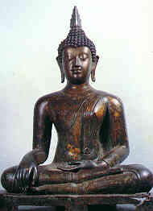

Načítám text…
Přátelé Dhammy

Kdo je nezávislý, ten se nechvěje,
ale kdo je závislý a uchopuje bytí
v tom či onom stavu,
ten nikdy nepřestane putovat.
Mnich, jenž zná toto nebezpečí,
že „v závislostech číhá velká hrozba“,
by měl kráčet s bdělou pozorností,
nezávisle, bez uchopování. Suttanipáta 752–3
Náplní schůzek je (v tomto pořadí) pití čaje, krátká recitace, meditace v sedě, někdy přednesení nějaké sutty, diskuse o Učení. Schůzky jsou volně přístupné všem příchozím bez nutnosti jakékoli znalosti Učení či praxe. Občas se členové (i nečlenové) sdružení sejdou na víkendovou meditaci mimo Prahu a přibližně dvakrát ročně organizují návštěvu nějakého hosta (mnicha) ze zahraničí. Sdružení má vlastní knihovní fond, který už několikrát změnil své umístění. V současnosti je největší část tohoto fondu v knihovně centra Lotus.
Ideovým zázemím sdružení je théravádový buddhismus, nazývaný podle dnešního zeměpisného rozšíření také „jižní buddhismus“ (tj. Thajsko, Barma, Šrí Lanka, Laos, Kambodža). Nejrozsáhlejší a soustavný kontakt má sdružení s tradicí thajských lesních škol (v linii Adžána Čá), ze které pochází také hlavní buddhistická inspirace některých členů. Většina členů má silný vztah k pálijskému kánonu – základnímu souboru théravádové tradice (někteří z nich jeho texty nejen čtou, ale i překládají jak z angličtiny, tak z pálijského originálu). Pálijský kánon však zde nemá být oporou pro nějakou ortodoxii nebo akademické debaty; je živým zdrojem, který promlouvá k těm, kdo chtějí následovat Buddhovu stezku osvobození.
The Friends of Dhamma is a group of people interested in the study and practice of Theravada Buddhism. It has close contact with the Thai Forest Tradition in the lineage of Ajahn Chah. Some members also translate texts from the Pali Canon into Czech. We meet regularly for meditation and discussion, and we also invite guests from abroad to teach Dhamma in the Czech Republic.
Pravidelná setkání
Buddhistické centrum Lotus, 4. patro, Dlouhá 2, Praha 1.
Aplikace do telefonu
Přátelé Dhammy si můžete nainstalovat jako aplikaci – texty, které otevřete, pak budou k dispozici i bez připojení.
Chcete-li si stránky uložit jako aplikaci: v Safari klepněte na Sdílet a zvolte Přidat na plochu. Texty, které otevřete, pak budou k dispozici i bez připojení.
Dhammapada · verš dne
Přeložil Karel Werner
Akce
Od počátku devadesátých let jsme do České republiky pozvali už několik mnichů thajské lesní tradice, aby zde učili meditaci a povzbudili místní zájemce o praxi Buddhovy Dhammy. Mezi nimi byli: Adžán Thiradhammó, Adžán Sumédhó, Adžán Víradhammó, Adžán Arijésakó, Adžán Akiňčanó, Adžán Džajasáró, Adžán Kusaló, Adžán Khémasiri, Adžán Ňánarató a Adžán Čhandakó.
Kromě toho nás navštěvují také mniši českého a slovenského původu, žijící v klášteřích jak v Evropě, tak v Asii. V současnosti česko-slovenskou Sanghu tvoří: Bhikkhu Ottama, Bhikkhu Gavésakó, Bhikkhu Ňánadassanó (Nyanadassano), Bhikkhu Surádhó, Bhikkhu Akálikó.
Thajská lesní tradice
Slovo kammatthána doslova znamená „pracovní základna“ nebo „pracoviště“. Označuje jisté meditační techniky a předměty rozjímání používané buddhistickými mnichy za účelem vykořenění sil nečistot (kilésa), touhy (tanhá) a nevědomosti (avidždžá) z mysli. Ačkoli termín kammatthána se vyskytuje v různých kontextech týkajících se meditace, dnes je tento termín často užíván k označení linie lesní tradice (kammatthánové tradice), na jejímž počátku stál Adžán Sao Kantasíló a jeho žák Adžán Man Bhúridattó.
Původ názvu „lesní tradice“ lze hledat ve skutečnosti, že samotný Buddha dosáhl probuzení v lese, svůj první výklad Dhammy podal v lese, a v lese také zemřel. Kvality mysli, které potřeboval k tomu, aby v divočině přežil po psychické a fyzické stránce, byly rovněž klíčem k pochopení Dhammy. A proto každý praktikující by si měl vzít divočinu za svého učitele, přizpůsobit se zákonům přírody (která je totožná se samsárou) a konečně proniknout k pravdě, která je zcela přesahuje.
Adžán Sao (1861–1941) náležel k řádu Dhammajut, ve kterém však neměl žádný zájem o kariéru učence a zcela se věnoval praxi meditace. Cvičil Adžána Mana v přísné disciplíně a kanonických meditačních praktikách, vsazených do kontextu nebezpečí a samoty života v divočině.
Adžán Man (1870–1949) byl synem rolníka pěstujícího rýži v provincii Ubon Rádžatháni na severovýchodě Thajska. Stal se buddhistickým mnichem (bhikkhu) v roce 1892. Cítil, že obyčejný zvykový buddhismus mu neměl co nabídnout, a tak se přidal k reformnímu řádu Dhammajut a za svého instruktora (upadždžhája) si vybral studenta prince Mongkuta. Na rozdíl od mnoha mnichů řádu Dhammajut nejevil zájem o studijní prostředí v klášteře svého instruktora a odešel žít s Adžánem Sao. Po několikaletém putování s Adžánem Sao se vydal sám na cestu hledání pravdy a zbytek svého života strávil putováním po středním Thajsku, Barmě a Laosu, pobývaje většinu času v lesích, zaměstnán praxí meditace. Nakonec, když dosáhl bodu, kdy přestal mít pochybnosti o možnosti dosažení ušlechtilých stavů probuzení, vrátil se na severovýchod, aby informoval Adžána Sao a poté pokračoval v putování. Postupně přitahoval následovníky, na které silně působilo jeho chování a učení. Domnívali se, že ztělesňoval Dhammu a Vinaju ve všem, co dělal a říkal. Místo výuky jediné meditační techniky, Adžán Man je učil plnou paletu dovedností, a pak je posílal do divočiny. V roce 1928 jeden úředník řádu Dhammajut nakázal následovníkům Adžána Mana, aby zakládali kláštery a pomáhali propagovat vládní program, s cílem domestikace těchto lesních mnichů. Adžán Man a hrstka jeho žáků odešla na sever, kde stále ještě nacházeli dostatek volnosti umožňující jim potulný způsob života. Počátkem třicátých let byl Adžán Man jmenován opatem významného kláštera ve městě Chieng Mai, ale ještě před úsvitem dalšího dne se z místa vytratil. Vrátil se na severovýchod, kde se až v posledních letech svého života konečně usadil. Zachoval si mnoho asketických praktik (dhutanga) až do své smrti v roce 1949.
Jeho nejznámějšími žáky byli Adžán Lí, Adžán Thét, Adžán Fan, Adžán Khao, Adžán Wén, Adžán Čá a Adžán Mahá Bua. Lesní meditační tradice se díky nim rozšířila po celém Thajsku a do několika dalších zemí. Od šedesátých let 20. století se stala populární díky zájmu médií a v neposlední řadě rovněž thajské královské rodiny. Milióny prostých lidí byly ovlivněny touto živoucí buddhistickou tradicí, jež klade důraz na střídmý způsob života a praxi meditace.
Buddhistické texty v češtině
Všechny texty se čtou přímo v aplikaci. Hledání prochází i celé texty. Tlačítkem ✓ si označíte, co jste už přečetli.
© Přátelé Dhammy
Fotogalerie
Další galerie na původním webu
Théraváda na internetu
sabbé sattá sadá hóntu
avérá sukhadžívinó
katam puňňaphalam majham
sabbé bhágí bhavantu té
Nechť všechny bytosti žijí šťastně
a bez nepřátelství.
Nechť všichni sdílejí dobré plody toho,
co jsem vykonal.